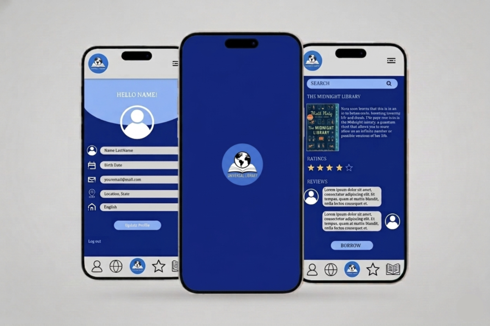
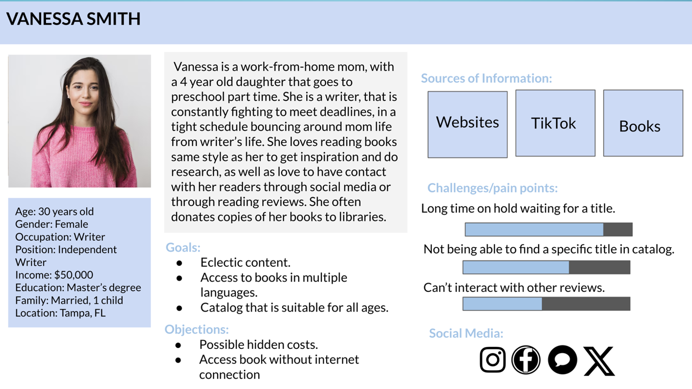
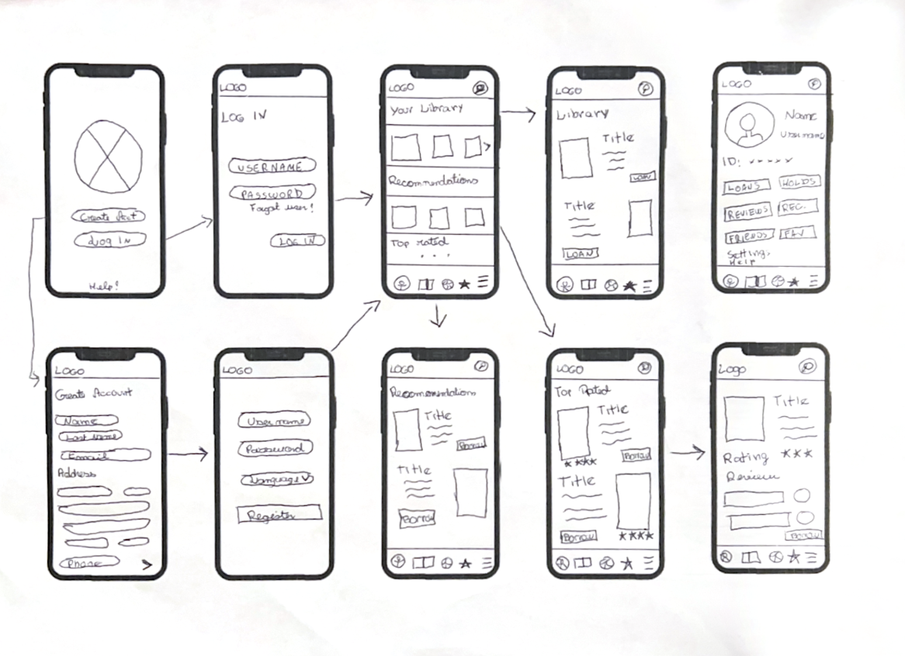
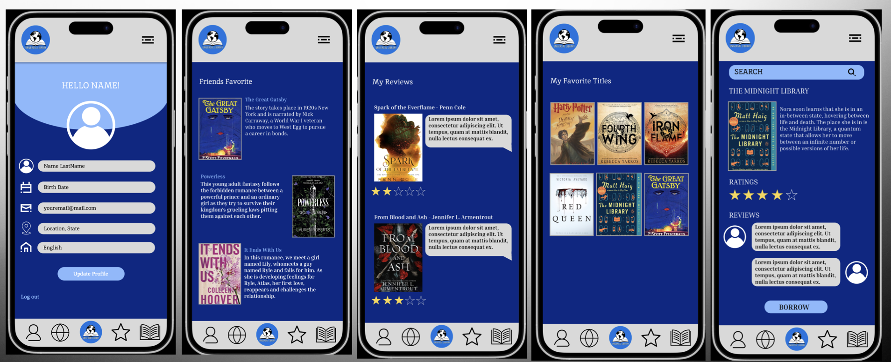

Web Development | UX Design | UX Research | UI Design
Access the Prototype

Access to books should not depend on location, income, or physical access to a library, however for many people around the world, it still does.
This project is a prototype for a mobile application that explores the design of Universal Library, a software that reimagines what a library can be in a digital, global context. The idea is simple: create a platform where anyone, anywhere, can access a shared collection of books without needing a physical library card.
The prototype was developed using Figma and focuses on creating an intuitive, accessible, and inclusive reading experience. It combines core library functions such as searching, borrowing, and reading with modern features like social interaction and multi-device access, which will allow the user to not only read on their phone, but also on a Kindle. iPad or any other mobile device, and multilingual support, allowing uploads of books in any language.
Despite the growth of digital content, access to books remains uneven, since traditional libraries are limited by geographic boundaries, limited physical inventory and access restrictions tied to residency or membership
At the same time, existing digital reading platforms often require paid subscriptions or purchases, it lacks global accessibility, provide limited multilingual options, and most of all, focus more on consumption than community
This creates a gap for users who want free, reliable, and inclusive access to books, especially across different countries and languages.
The challenge was to design a platform that removes these barriers while still feeling simple, secure, and user-friendly.
Universal Library is designed as a free, global, mobile-first digital library that allows users to browse, borrow, and read books entirely online.
Users begin by creating an account, which generates a digital library card that will allow them to search and browse a multilingual catalog, borrow or place holds on titles, read directly within the app or across devices, track reading progress, leave ratings and reviews, and connect with other readers and share recommendations
The experience is intentionally designed to feel clear and intuitive, with a focus on simplicity and accessibility. Features are organized into distinct sections, reducing clutter and making navigation straightforward.
The app also introduces flexibility, because books can be accessed across multiple devices, offline reading is supported after download, and privacy settings allow users to control how much they share
The design here prioritizes ease of use, familiarity, and inclusivity.
My role focused on translating a complex, large-scale idea into a usable and approachable mobile experience.
Through the design process, I created a clear and intuitive user flow for browsing, borrowing, and reading; designed a clean, accessible interface that reduces cognitive load; developed a cohesive system of icons and affordances to guide interaction; structured the app to support multiple user behaviors, from casual browsing to active reading; and considered global accessibility, including multilingual support and offline functionality
This project demonstrates the ability to design for both scale and inclusivity, balancing functionality with simplicity in a way that supports a diverse user base.
To guide the design, I explored how different types of readers interact with books and digital platforms.
I considered a range of users, such as students looking for accessible educational resources, casual readers searching for convenience, and avid readers interested in discovery and community.
From this, I developed personas that reflected different needs, such as accessibility, affordability, and flexibility in reading habits.
This reinforced the importance of designing a platform that feels inclusive and adaptable to different users around the world.
Users need platforms that work across devices, languages, and connectivity levels
A large library system can easily become overwhelming without a clear structure
Users want to read on their own terms—across devices, online or offline
Handling user data requires transparency and thoughtful design decisions
Features like reviews, ratings, and sharing create a more engaging experience



Universal Library reimagines the role of a library in a digital world, transforming it from a physical space into a globally accessible platform.
By focusing on accessibility, usability, and inclusivity, the design addresses key barriers that prevent users from accessing books today. It demonstrates how thoughtful UX decisions can simplify complex systems and make them more approachable for a wide audience.
While the project remains a prototype, it highlights the potential for digital platforms to expand access to knowledge and create more connected reading experiences.